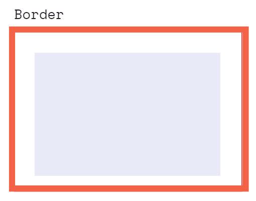

CSS - Cascading Style Sheets
Used to describe the appearance or visual representation of our documents.
When we write CSS we write CSS rules.
CSS MDN Reference
Colors
Named
RGB
HEX
Text Properties
- text-align
- text-decoration
- font
- font-size
- font-family
- font-weight
Units
Absolute Units
Relative Units
CSS Selectors
- Element Selector : All elements of a type
- ID Selector
- Class Selector
- Descendant Selector
- Adjacent Selector
- Direct-Descendant Selector
- Direct-Chiled Selector
- Attribute Selector
Pseudo Classes
Keyword added to a selector that specifies a special state of the selected element.
- :active
- :checked
- :first
- :first-child
- :hover
- :not()
- :nth-child
- :nth-of-type
- etc..
Pseudo Elements
Keyword added to a selector that lets you style a particular part of the seleceted element(s)
- ::after
- ::before
- ::first-letter
- ::first-line
- ::selection (!)
Cascade: ORDER MATTERS!
In general
Specificity
How the browser decides which rules to apply when there is a conflict.
The more specific selector wins despite order.
ID > CLASS > ELEMENT
Specificity Calculator Tool!
The Box Model


Things to membah'
- box-sixing:border-box : now the width of our element is actually gonna go from border to border (bypass padding?)
Inline vs. Block Elements
Other CSS properties...
Opacity and the Alpha Channel
- alpha channel -> eg. setting a background with rgba -> affects the background but nothing else
- opacity for the whole element
The Position Property
Possible values:
- Static:
- The default value of position.
- The element is positioned "according to the normal flow of the document.
- The "top", "right", "bottom", "left" and "z-index" properties have no effect.
- Relative:
- The element is positioned "according to the normal flow of the document.
- The "top", "right", "bottom", "left" and "z-index" properties can be used to offset the element relative to itself.
- The offset does not affect the position of any other elements.
- Absolute:
- The elements is removed from the "normal document flow".
- No space is created for the element in the page layout.
- It is position relative to its closest positioned ancestor, if any; otherwise, it is placed relative to the initial "containing block".
- Positioned means that the ancestor has a value which is not static.
- Fixed:
- The element is removed from the "normal document flow".
- No space is created for the element in the page layout.
- The element is positioned relative to the initial containing block established by the viewport, except when one of its ancestors has a "transform", "perspective" or "filter" property set to something other than "none".
- Sticky:
- "If you want something to start out not fixed and then get fixed later when you scroll past it."
CSS Transitions
The Power of CSS Transforms
FlexBox
To turn on FlexBox:
- Set [display: flex] on the parent element.
Flex-Direction
- To decide the main axis direction in our container.
- The default is [flex-direction: row].
- Possible values for flex-direction:
- [flex-direction: row]
- [flex-direction: row-reverse]
- [flex-direction: column]
- [flex-direction: column-reverse]
Justify-Content
- Determines how the content is distributed across the main axis.
- The default value is [justify-content:flex-start].
- Some of the possible values for justify-content:
- [justify-content: center]
- Pack items around the center.
- [justify-content: start]
- Pack items from the start.
- [justify-content: end]
- [justify-content: flex-start]
- Pack flex items from the start.
- [justify-content: flex-end]
- Pack flex items from the end.
- [justify-content: left]
- Pack items from the left.
- [justify-content: right]
- Pack items from the right.
- [justify-content: normal]
- [justify-content: space-around]
- Distribute items evenly. The first item is flush with the start, the last is flush with the end.
- [justify-content: space-evenly]
- Distribute items evenly. Items have a half-size space on either end.
- [justify-content: stretch]
- Distribute items evenly. Items have equal space around them.
Flex-Wrap
- Determines wheter our elements are going to wrap along the main axis unto a new line if the flex-direction is row/horizontal or a new column if the flex-direction is column/vertical.
Align-Items
- Distribute items along the cross-axis. (vs. justify-content which distributes along the main axis)
Flex-Basis
- Defines the initial size of an element before additional space is distributed.
- Flex basis gives a width or height across the flex main-axis.
- Other widths/heights given for the main axis will be ignored in favor of flex-basis.
Flex-Grow
- >Controls the amount of available space an element should take up if there is available space.
- Accepts a unit-less number value.
Flex-Shrink
- If items are larger than the container; they shrink according to flex-shrink.
- Accepts a unit-less number value.
Flex Shorthand
- It exists.
- Looks confusing.
- Lets not do that.
Media Queries
- https://devfacts.com/media-queries-breakpoints-2022/
- https://developer.mozilla.org/en-US/docs/Web/CSS/Media_Queries/Using_media_queries
CSS Tools: Reset CSS
https://meyerweb.com/eric/tools/css/reset/